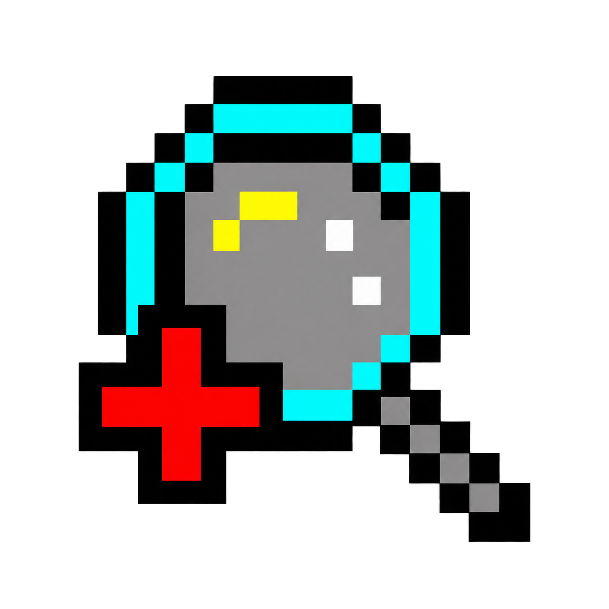
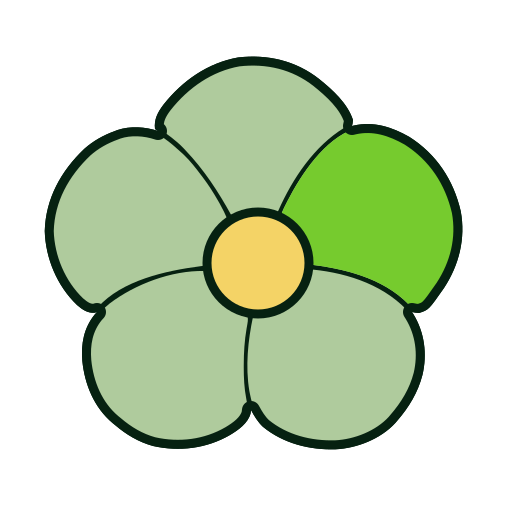

Telegram hesabınla giriş yap.
IBQgram starting…
Applies to this Mac. Muted chats stay muted. The chat you are reading will not interrupt you.
Checking notification permission…
Banner style, Lock Screen previews and Focus are controlled by macOS.
Status labels do not change your Telegram connection or privacy settings.
An independent desktop client for Telegram.
Version 0.1 · GPLv3
Not an official ICQ or Telegram application.
Search for a user by Telegram username.
